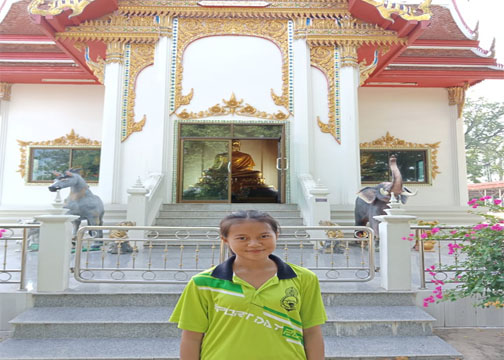

สถานที่ท่องเที่ยว
มีต้นโพธิ์ปลูกอยู่ริมฝั่งแม่น้ำป่าสัก มีศิลาหรือหินลอยน้ำมา ชาวบ้านได้นำเชือกผูกไว้กับต้นโพธิ์แต่ต้านความแรงของแม่น้ำไม่ไหว ศิลาลอยไปตามน้ำทำให้ต้นโพธิ์เอน ชาวบ้านจึงขนานนามว่า “โพธิ์เอน” จึงชื่อตำบลโพธิ์เอนมาตลอด
เป็นที่ราบลุ่มมีแม่น้ำป่าสักไหลผ่านกลาง แยกเป็น 2 ฝั่งๆ ตะวันออกมีหมู่ที่ 1,3,5 ฝั่งตะวันตกมี หมู่ที่ 2,4,6 เหมาะแก่การเพาะปลูก
ทางบกมีถนนสายท่าเรือ – ปากท่า (ฝั่งทิศตะวันตก) ระยะทาง 8 กิโลเมตร และสายท่าเรือ – นครหลวง (ฝั่งตะวันออก) ระยะทาง 9 กิโลเมตร